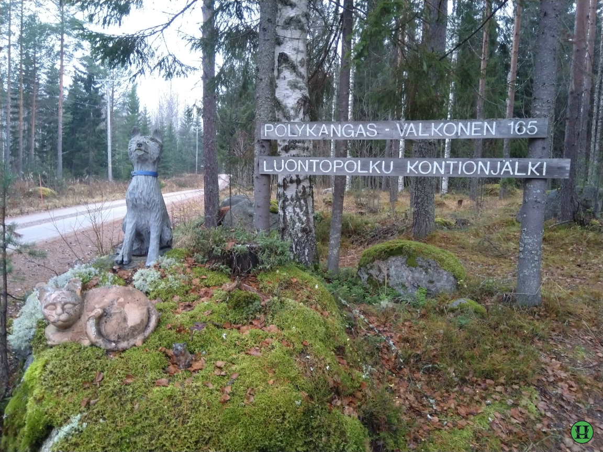
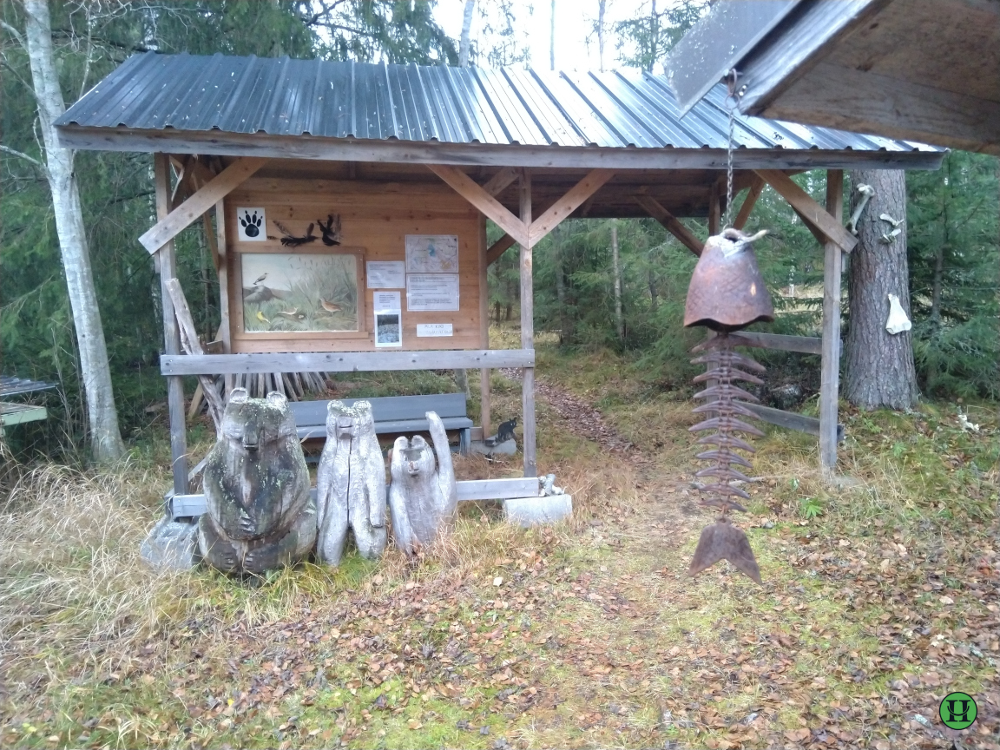

Luontopolun pituus on 2,5 km.
Luontopolku, joka kattaa laajalti suomalaisen metsämaiseman, alueella on mm. soisia lampialueita ja tuoretta kangasmetsää.
Pölykankaan tieltä käännytään Kurrikadulle ja sitten alkavat Kontionjäljen opasteet. Reitti on merkattu maastoon valkoisin kyltein, joissa komeilee kontionjälki. Reitin varrella on luonnosta kertovia infokylttejä.
Polun ääripäässä on näköalatorni, heikkohermoiset älkööt vaivautuko! Pölykankailla on vuokrattavissa polun läheisyydestä kaksi lomamökkiä. Uuraisten kirkonkylälle on matkaa noin 14 km ja vastaavasti Hirvaskankaalle noin kahdeksan kilometriä.
 
Takaisin Kontionjälkiin tässä.
Takaisin kartalle tässä.
Uuraisten sivut on tässä.